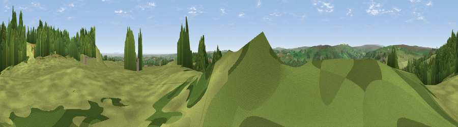

Viewpoint near Summerbridge
#10401 in England · top 13% of its area beats it · near SummerbridgeWhere it is
The exact computed spot (SE 20675 63875). Click the marker for map links.
The view, rendered

A 360° render of this exact spot computed from the terrain model, tree cover and land cover — summer colours, afternoon light, calibrated against photographs of famous viewpoints. Real trees, hedges and buildings will differ in detail.
The panorama
Grey silhouette: terrain skyline in each direction (720 bearings, Earth curvature and refraction included). Dashed green: skyline with trees (+15 m) and buildings (+8 m) as obstacles. Blue strip: how far the ground is visible on each bearing.
Where the view opens
Wedge length = distance to the farthest visible ground on that bearing (vegetation-aware). Rings at 10, 25 and 50 km.
What fills the view
60% grassland · 38% woodland · 1% built-up ·
Angular shares of the visible panorama (visual magnitude), not map area. Landscape diversity 0.33 (0–1 Shannon).
Key numbers
More beautiful places nearby
The staircase of upgrades: each row has a higher view potential than everything closer. Driving times are estimates from straight-line distance, calibrated against real road routing — check an actual route before setting out.
| Place | Direction | Drive | Score |
|---|---|---|---|
| Viewpoint near Summerbridge | ENE · 0 km | ~1 min | 66.0 |
| Viewpoint near Low Laithe | NNE · 1 km | ~4 min | 66.1 |
| High Crag Ridge | WSW · 4 km | ~10 min | 67.6 |
| How Hill | ENE · 8 km | ~15 min | 72.9 |
| Viewpoint near Bewerley | W · 8 km | ~16 min | 75.7 |
| Viewpoint near Bewerley | W · 8 km | ~16 min | 76.8 |
| Viewpoint near Otley | S · 20 km | ~33 min | 77.5 |
| Viewpoint near East Witton | NNW · 22 km | ~37 min | 77.8 |
54.07040, -1.68556 · source: screening · position refined by local search. Computed location — check access rights before visiting.